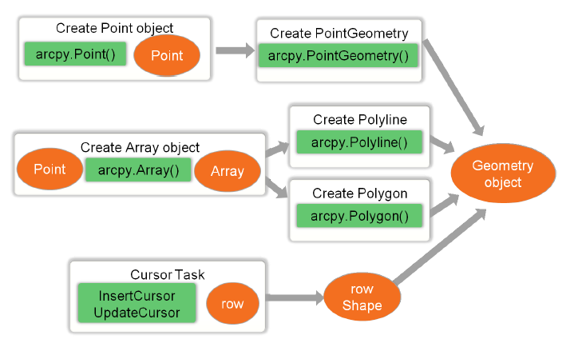

Introduction to Python and ArcPy

Who am I?
Jerry Yuan
Ph.D in Geography (2008)
Master in GIS(2001)
Bachelor in Environmental Geography (1998)
17+ years' experience in GIS
Questions
- I heard programming is difficult and I am just a Geographer.
- Why should I spend several weeks on learning Python and ArcPy for my GIS work?
- Can I just use ArcGIS Desktop to do everything I want to do?

Answer IS
We are all lazy!!!We want to spend more time on the creative GIS work rather than the boring, repetitive GIS work.
We want to spend more time with our family and friends!!!
We want to sleep more!!!
.jpg)
Attention!!!
If you are a lazy person like me, keep your attention focused for two hours today.You will save hundreds of hours or even thousands of hours in your future career.

You don't believe me?
Here is my story......
Outline
Introduction to Python - 45 minutes
- An Overview of Python
- Data types
- Control Structures
- Functions
- Object-Oriented Programming
Introduction to ArcPy - 45 minutes
- An Overview of ArcPy
- ModelBuilder vs. ArcPy
- Describe, List Functions
- Selections, Cursors, Geometric Objects
ArcPy Case Study - 10 minutes
An Overview of Python
- "Python is an easy to learn, powerful programming language."
- "It has efficient high-level data structures and a simple but effective approach to object-oriented programming."
- "Python’s elegant syntax and dynamic typing, together with its interpreted nature, make it an ideal language for scripting and rapid application development in many areas on most platforms."
Numeric operators
python or C:\Python27\ArcGIS10.1\python
Python 2.7.2 (default, Jun 12 2011, 15:08:59)
Type "help", "copyright", "credits" or "license" for more information.
>>> 2 + 2
4
>>> 50 - 5*6
20
>>> (50 - 5.0*6) / 4
5.0
>>> 8 / 5.0
1.6
Boolean operators
>>> 1==0
False
>>> not (1==0)
True
>>> (2==2) and (2==3)
False
>>> (2==2) or (2==3)
True
Strings
>>> 'artificial' + "intelligence"
'artificialintelligence'
>>> 'artificial'.upper()
'ARTIFICIAL'
>>> 'HELP'.lower()
'help'
>>> len('Help')
4
Lists
Lists store a sequence of mutable items
>>> fruits = ['apple','orange','pear','banana']
>>> fruits[0]
'apple'
>>> otherFruits = ['kiwi','strawberry']
>>> fruits + otherFruits
>>> ['apple', 'orange', 'pear', 'banana', 'kiwi', 'strawberry']
List Indexing
>>> fruits[-2]
'pear'
>>> fruits.pop()
'banana'
>>> fruits
['apple', 'orange', 'pear']
>>> fruits.append('grapefruit')
>>> fruits
['apple', 'orange', 'pear', 'grapefruit']
>>> fruits[-1] = 'pineapple'
>>> fruits
['apple', 'orange', 'pear', 'pineapple']
List slice operator
>>> fruits
['apple', 'orange', 'pear', 'pineapple']
>>> fruits[0:2]
['apple', 'orange']
>>> fruits[:3]
['apple', 'orange', 'pear']
>>> fruits[2:]
['pear', 'pineapple']
>>> len(fruits)
4
Lists of Lists
>>> lstOfLsts = [['a','b','c'],[1,2,3],['one','two','three']]
>>> lstOfLsts[1][2]
3
>>> lstOfLsts[0].pop()
'c'
>>> lstOfLsts
[['a', 'b'],[1, 2, 3],['one', 'two', 'three']]
Tuples
Like a list except that it is immutable once it is created (i.e. you cannot change its content once created)
>>> pair = (3,5)
>>> pair[0]
3
>>> x,y = pair
>>> x
3
>>> y
5
>>> pair[1] = 6
TypeError: object does not support item assignment
Sets
serves as an unordered list with no duplicate items.
>>> shapes = ['circle','square','triangle','circle']
>>> setOfShapes = set(shapes)
>>> setOfShapes
set(['circle','square','triangle'])
>>> setOfShapes.add('polygon')
>>> setOfShapes
set(['circle','square','triangle','polygon'])
>>> 'circle' in setOfShapes
True
>>> favoriteShapes = ['circle','triangle','hexagon']
>>> setOfFavoriteShapes = set(favoriteShapes)
>>> setOfShapes - setOfFavoriteShapes
set(['square','polyon'])
>>> setOfShapes & setOfFavoriteShapes
set(['circle','triangle'])
>>> setOfShapes | setOfFavoriteShapes
set(['circle','square','triangle','polygon','hexagon'])
Dictionary
stores a map from one type of object (the key) to another (the value). The key must be an immutable type (string, number, or tuple). The value can be any Python data type.
>>> studentIds = {'knuth': 42.0, 'turing': 56.0, 'nash': 92.0 }
>>> studentIds['turing']
56.0
>>> studentIds['nash'] = 'ninety-two'
>>> studentIds
{'knuth': 42.0, 'turing': 56.0, 'nash': 'ninety-two'}
>>> del studentIds['knuth']
>>> studentIds
{'turing': 56.0, 'nash': 'ninety-two'}
Dictionary
>>> studentIds['knuth'] = [42.0,'forty-two']
>>> studentIds
{'knuth': [42.0, 'forty-two'], 'turing': 56.0, 'nash': 'ninety-two'}
>>> studentIds.keys()
['knuth', 'turing', 'nash']
>>> studentIds.values()
[[42.0, 'forty-two'], 56.0, 'ninety-two']
>>> studentIds.items()
[('knuth',[42.0, 'forty-two']), ('turing',56.0), ('nash','ninety-two')]
>>> len(studentIds)
3
Writing Python Scripts
Open the file called foreach.py and update it with the following code:
# This is what a comment looks like
fruits = ['apples','oranges','pears','bananas']
for fruit in fruits:
print fruit + ' for sale'
fruitPrices = {'apples': 2.00, 'oranges': 1.50, 'pears': 1.75}
for fruit, price in fruitPrices.items():
if price < 2.00:
print '%s cost %f a pound' % (fruit, price)
else:
print fruit + ' are too expensive!'
Writing Python Scripts
[cs188-ta@nova ~/tutorial]$ python foreach.py
apples for sale
oranges for sale
pears for sale
bananas for sale
oranges cost 1.500000 a pound
pears cost 1.750000 a pound
apples are too expensive!
Functional Programming: map & filter
>>> map(lambda x: x * x, [1,2,3])
[1, 4, 9]
>>> filter(lambda x: x > 3, [1,2,3,4,5,4,3,2,1])
[4, 5, 4]
Functional Programming: list comprehension
>>> nums = [1,2,3,4,5,6]
>>> plusOneNums = [x+1 for x in nums]
>>> oddNums = [x for x in nums if x % 2 == 1]
>>> oddNums
[1,3,5]
>>> oddNumsPlusOne = [x+1 for x in nums if x % 2 ==1]
>>> oddNumsPlusOne
[2,4,6]
Beware of Indentation!
if 0 == 1:
print 'We are in a world of arithmetic pain'
print 'Thank you for playing'
if 0 == 1:
print 'We are in a world of arithmetic pain'
print 'Thank you for playing'
Functions
fruitPrices = {'apples':2.00, 'oranges': 1.50, 'pears': 1.75}
def buyFruit(fruit, numPounds):
if fruit not in fruitPrices:
print "Sorry we don't have %s" % (fruit)
else:
cost = fruitPrices[fruit] * numPounds
print "That'll be %f please" % (cost)
# Main Function
if __name__ == '__main__':
buyFruit('apples',2.4)
buyFruit('coconuts',2)
[cs188-ta@nova ~]$ python fruit.py
That'll be 4.800000 please
Sorry we don't have coconuts
Object-Oriented Programming in Python
Save the following code in shop.py.
class FruitShop:
def __init__(self, name, fruitPrices):
"""
name: Name of the fruit shop
fruitPrices: Dictionary with keys as fruit
strings and prices for values e.g.
{'apples':2.00, 'oranges': 1.50, 'pears': 1.75}
"""
self.fruitPrices = fruitPrices
self.name = name
print 'Welcome to the %s fruit shop' % (name)
def getCostPerPound(self, fruit):
"""
fruit: Fruit string
Returns cost of 'fruit', assuming 'fruit'
is in our inventory or None otherwise
"""
if fruit not in self.fruitPrices:
print "Sorry we don't have %s" % (fruit)
return None
return self.fruitPrices[fruit]
def getPriceOfOrder(self, orderList):
"""
orderList: List of (fruit, numPounds) tuples
Returns cost of orderList. If any of the fruit are
"""
totalCost = 0.0
for fruit, numPounds in orderList:
costPerPound = self.getCostPerPound(fruit)
if costPerPound != None:
totalCost += numPounds * costPerPound
return totalCost
def getName(self):
return self.name
Object-Oriented Programming in Python
Save the following code in shopTest.py
import shop
shopName = 'the Berkeley Bowl'
fruitPrices = {'apples': 1.00, 'oranges': 1.50, 'pears': 1.75}
berkeleyShop = shop.FruitShop(shopName, fruitPrices)
applePrice = berkeleyShop.getCostPerPound('apples')
print applePrice
print('Apples cost $%.2f at %s.' % (applePrice, shopName))
otherName = 'the Stanford Mall'
otherFruitPrices = {'kiwis':6.00, 'apples': 4.50, 'peaches': 8.75}
otherFruitShop = shop.FruitShop(otherName, otherFruitPrices)
otherPrice = otherFruitShop.getCostPerPound('apples')
print otherPrice
print('Apples cost $%.2f at %s.' % (otherPrice, otherName))
print("My, that's expensive!")
Object-Oriented Programming in Python
[cs188-ta@nova ~]$ python shopTest.py
Welcome to the Berkeley Bowl fruit shop
1.0
Apples cost $1.00 at the Berkeley Bowl.
Welcome to the Stanford Mall fruit shop
4.5
Apples cost $4.50 at the Stanford Mall.
My, that's expensive!
Python Courses @ Edx and Coursera
- Edx: Introduction to Computer Science and Programming Using Python
- Coursera: An Introduction to Interactive Programming in Python (Part 1), (Part 2)
ArcPy: Overview (ESRI)
- "ArcPy is a site package that builds on (and is a successor to) the successful arcgisscripting module. Its goal is to create the cornerstone for a useful and productive way to perform geographic data analysis, data conversion, data management, and map automation with Python."
- "ArcPy provides access to geoprocessing tools as well as additional functions, classes, and modules that allow you to create simple or complex workflows quickly and easily."
Differences between ArcPy and ModelBuilder
- You can use if/then/else and loop control structures and data structures, e.g. list/tuple/set/dictionary in your scripts.
- You can have the freedom to control your scripts to do what you want to do.
- However, A relatively steep learning curve and not as visible as Models built from ModelBuilder.
You can convert the models built by ModelBuilder to a Python Script.
ArcPy: Functions and classes
ArcPy: modules
- Data Access module: arcpy.da
- Mapping module: arcpy.mapping
- Network Analyst module: arcpy.na
- Spatial Analyst module: arcpy.sa
- Time module: arcpy.time
Your First ArcPy Script
import arcpy
arcpy.env.workspace = r'C:\GIS\Corvallis.gdb'
arcpy.env.overwriteOutput = True
arcpy.Buffer_analysis("Schools", "BuffSchools1000", "1000 feet")
print "Script completed"
ArcPy: Describe function
returns an object that contains various properties on the data element being described.The data elements can be geodatabases, feature classes, tables, rasters, network datasets, topology, geometric networks, shapefiles, toolboxes/tools, folders, coverages, layer files, map documents, etc.
ArcPy: Describe function
import arcpy
arcpy.env.workspace = r'C:\GIS\Corvallis.gdb'
desc = arcpy.Describe("Schools")
print "Name: {} Shape: {}".format(desc.name, desc.shapeType)
for fld in desc.fields:
print "\t{}".format(fld.name)
ArcPy: List function
returns Python lists for different types of data.The List functions can provide you with a list of feature class names in a geodatabase, shapefile names in a system folder, table names in a geodatabase, field names in a table or feature class, etc.
ArcPy: List function
import arcpy
arcpy.env.workspace = r'C:\GIS\Corvallis.gdb'
field_list = arcpy.ListFields("Schools")
for fld in field_list:
print "\t{}".format(fld.name)
ArcPy: Working with Selection
Create a subset of data by making a feature layer in memory, optionally applying a SQL expression and/or a FieldInfo object to alter the schema, and them copy the feature layer to a new feature class.ArcPy: Working with Selection
import arcpy
arcpy.env.workspace = r'C:\GIS\Corvallis.gdb'
newField1 = arcpy.AddFieldDelimiters(arcpy.env.workspace, "LEVEL_")
SQLExp = newField1 + " = " + " 'E' "
arcpy.MakeFeatureLayer_management("Schools", "SchoolsLyr", SQLExp)
arcpy.CopyFeatures_management("SchoolsLyr", "newSchools")
arcpy.Delete_management("SchoolsLyr")
ArcPy: Working with Cursors
A cursor is a data access object that can be used to iterator over a set of data in a table or insert new rows into a table.you can use da cursors to read, update, and populate feature classes and tables.
ArcPy: Working with Cursors
ArcPy: Working with Cursors
ArcPy: da.SearchCursor
import arcpy
fc = "c:/GIS/Corvallis.gdb/Schools"
fields = ["LEVEL_", "SCHOOL_NAM", "SHAPE@XY"]
with arcpy.da.SearchCursor(fc, fields) as cursor:
for row in cursor:
print("{0}, {1}, {2}".format(row[0], row[1], row[2]))
ArcPy: da.UpdateCursor
import arcpy
fc = "c:/GIS/Corvallis.gdb/Schools"
fields = ["LEVEL_", "SCHOOL_NAM"]
with arcpy.da.UpdateCursor(fc, fields) as cursor:
for row in cursor:
if (row[0] == 'C'):
row[1] = row[1] + " (College)"
elif (row[0] == 'E'):
row[1] = row[1] + " (Elementary)"
elif (row[0] == 'H'):
row[1] = row[1] + " (High)"
elif (row[0] == 'M'):
row[1] = row[1] + " (Intermediate)"
# Update the cursor with the updated list
#
cursor.updateRow(row)
ArcPy: da.InsertCursor
import arcpy
# A list of values that will be used to construct new rows
#
row_values = [(17, 'H', 'Anderson High School', (1294863.528, 340045.172)),
(18, 'C', 'Anderson College', (1294163.528, 340945.172))]
cursor = arcpy.da.InsertCursor("c:/GIS/Corvallis.gdb/Schools",
("ID", "LEVEL_", "SCHOOL_NAM", "LOCATION", "PHONE", "SHAPE@XY"))
for row in row_values:
cursor.insertRow(row)
del cursor
ArcPy: Working with Geometry objects
ArcPy: Creating Point objects
import arcpy
pnt = arcpy.Point()
pnt.X = -98.36
pnt.Y = 29.56
print "X: {0}, Y: {1}".format(pnt.X, pnt.Y)
pnt = arcpy.Point(-98.36, 29.56)
print "X: {0}, Y: {1}".format(pnt.X, pnt.Y)
ArcPy: Creating Polyline objects
import arcpy
pnt = arcpy.Point()
ary = arcpy.Array()
coordList = [[100, 100], [200, 200], [300, 100]]
for coord in coordList:
pnt.X = coord[0]
pnt.Y = coord[1]
ary.add(pnt)
polyline = arcpy.Polyline(ary)
print "Point count: {0}".format(polyline.pointCount)
ArcPy: Creating Polygon objects
import arcpy
pnt = arcpy.Point()
ary = arcpy.Array()
coordList = [[100, 100], [200, 200], [300, 100]]
for coord in coordList:
pnt.X = coord[0]
pnt.Y = coord[1]
ary.add(pnt)
polyline = arcpy.Polygon(ary)
print "Point count: {0}".format(polyline.pointCount)
ArcPy Case Study: Lake Partner Program
The Ontario Lake Partner Program (LPP) provides total phosphorus concentrations and water transparency (using a Secchi disc) data for Ontario’s inland lakes. The data is collected through volunteer monitoring efforts.The data is available in two Excel files: One for Secchi Depth and One for Total Phosphorus.
ArcPy Case Study: Lake Partner
ArcPy Case Study: Lake Partner
We want to generate three feature classes from these two Excel files.- Sampling locations (Stations): Lake Name, Township, STN, Site ID, Site Description, latitude, longitude
- Secchi Depth: Year, Secchi Depth
- Total Phosphorus: Date, TP1, TP2
ArcPy Case Study: Lake Partner
import xlrd, arcpy, string, os, zipfile, fileinput, time
from datetime import date
start_time = time.time()
INPUT_PATH = "input"
OUTPUT_PATH = "output"
if arcpy.Exists(OUTPUT_PATH + "\\LakePartner.gdb"):
os.system("rmdir " + OUTPUT_PATH + "\\LakePartner.gdb /s /q")
os.system("del " + OUTPUT_PATH + "\\*LakePartner*.*")
arcpy.CreateFileGDB_management(OUTPUT_PATH, "LakePartner", "9.3")
arcpy.env.workspace = OUTPUT_PATH + "\\LakePartner.gdb"
ArcPy Case Study: Lake Partner
def parseLatLng(latlng):
if len(str(latlng).strip()) == 0:
return 0
latlngInt = int(latlng)
degree = int(latlngInt / 10000)
temp = latlngInt - degree * 10000
minute = int(temp / 100)
second = int(temp - minute * 100)
return degree + (minute/60.0) + (second/3600.0)
def parseValue(value):
if len(str(value).strip()) == 0:
return None
return value
ArcPy Case Study: Lake Partner
def createFeatureClass(featureName, featureData, featureFieldList, featureInsertCursorFields):
print "Create " + featureName + " feature class"
featureNameNAD83 = featureName + "_NAD83"
featureNameNAD83Path = arcpy.env.workspace + "\\" + featureNameNAD83
arcpy.CreateFeatureclass_management(arcpy.env.workspace, featureNameNAD83, "POINT", "", "DISABLED", "DISABLED", "", "", "0", "0", "0")
arcpy.DefineProjection_management(featureNameNAD83Path, "GEOGCS['GCS_North_American_1983',DATUM['D_North_American_1983',SPHEROID['GRS_1980',6378137.0,298.257222101]],PRIMEM['Greenwich',0.0],UNIT['Degree',0.0174532925199433]]")
for featrueField in featureFieldList:
arcpy.AddField_management(featureNameNAD83Path, featrueField[0], featrueField[1], featrueField[2], featrueField[3], featrueField[4], featrueField[5], featrueField[6], featrueField[7], featrueField[8])
cntr = 1
try:
with arcpy.da.InsertCursor(featureNameNAD83, featureInsertCursorFields) as cur:
for rowValue in featureData:
cur.insertRow(rowValue)
cntr = cntr + 1
except Exception as e:
print "\tError: " + featureName + ": " + e.message
arcpy.Project_management(featureNameNAD83Path, arcpy.env.workspace + "\\" + featureName, "PROJCS['WGS_1984_Web_Mercator_Auxiliary_Sphere',GEOGCS['GCS_WGS_1984',DATUM['D_WGS_1984',SPHEROID['WGS_1984',6378137.0,298.257223563]],PRIMEM['Greenwich',0.0],UNIT['Degree',0.0174532925199433]],PROJECTION['Mercator_Auxiliary_Sphere'],PARAMETER['False_Easting',0.0],PARAMETER['False_Northing',0.0],PARAMETER['Central_Meridian',0.0],PARAMETER['Standard_Parallel_1',0.0],PARAMETER['Auxiliary_Sphere_Type',0.0],UNIT['Meter',1.0]]", "NAD_1983_To_WGS_1984_5", "GEOGCS['GCS_North_American_1983',DATUM['D_North_American_1983',SPHEROID['GRS_1980',6378137.0,298.257222101]],PRIMEM['Greenwich',0.0],UNIT['Degree',0.0174532925199433]]")
arcpy.Delete_management(featureNameNAD83Path, "FeatureClass")
print "Finish " + featureName + " feature class."
ArcPy Case Study: Lake Partner
stationsDict = {}
TPCountDict = {}
featureName = "TotalPhosphorus"
featureData = []
wb = xlrd.open_workbook('input\\TP for annual report for the web 2013.xls')
sh = wb.sheet_by_name(u'LPP TP Data 2013')
startRowNum = 8; # start with 0
for rownum in range(startRowNum, sh.nrows):
row = sh.row_values(rownum)
STN = int(row[2])
SITEID = int(row[3])
Date_ = row[7]
TP1 = parseValue(row[8])
TP2 = parseValue(row[9])
DataCollector = row[10] # unicode
MajorDifference = row[11] # str
ID = STN * 10000 + SITEID
if ID in TPCountDict:
TPCountDict[ID] = TPCountDict[ID] + 1
else:
TPCountDict[ID] = 1
stationsDict[ID] = row
Latitude = parseLatLng(row[5])
Longitude = -parseLatLng(row[6])
featureData.append([(Longitude, Latitude), STN, SITEID, Date_, TP1, TP2, DataCollector, MajorDifference, ID, Latitude, Longitude])
featureFieldList = [["STN", "LONG", "", "", "", "", "NON_NULLABLE", "REQUIRED", ""], ["SITEID", "LONG", "", "", "", "", "NON_NULLABLE", "REQUIRED", ""], ["Date_", "DATE", "", "", "", "", "NON_NULLABLE", "REQUIRED", ""], ["TP1", "DOUBLE", "", "", "", "", "NULLABLE", "NON_REQUIRED", ""], ["TP2", "DOUBLE", "", "", "", "", "NULLABLE", "NON_REQUIRED", ""], ["DataCollector", "TEXT", "", "", "", "", "NULLABLE", "NON_REQUIRED", ""], ["MajorDifference", "TEXT", "", "", "", "", "NULLABLE", "NON_REQUIRED", ""], ["ID", "LONG", "", "", "", "", "NON_NULLABLE", "REQUIRED", ""], ["Latitude", "DOUBLE", "", "", "", "", "NULLABLE", "NON_REQUIRED", ""], ["Longitude", "DOUBLE", "", "", "", "", "NULLABLE", "NON_REQUIRED", ""]]
featureInsertCursorFields = ("SHAPE@XY", "STN", "SITEID", "Date_", "TP1", "TP2", "DataCollector", "MajorDifference", "ID", "Latitude", "Longitude")
createFeatureClass(featureName, featureData, featureFieldList, featureInsertCursorFields)
ArcPy Case Study: Lake Partner
featureName = "SecchiDepth"
SECountDict = {}
featureData = []
wb = xlrd.open_workbook('input\\Average Secchi data for annual report 2013.xls')
sh = wb.sheet_by_name(u'LPP Secchi Data 2013')
startRowNum = 2; # start with 0
for rownum in range(startRowNum, sh.nrows):
row = sh.row_values(rownum)
STN = int(row[2])
SITEID = int(row[3])
Year_ = int(row[7])
SecchiDepth = parseValue(row[8])
ID = STN * 10000 + SITEID
if ID in SECountDict:
SECountDict[ID] = SECountDict[ID] + 1
else:
SECountDict[ID] = 1
stationsDict[ID] = row
Latitude = parseLatLng(row[5])
Longitude = -parseLatLng(row[6])
featureData.append([(Longitude, Latitude), STN, SITEID, Year_, SecchiDepth, ID, Latitude, Longitude])
featureFieldList = [["STN", "LONG", "", "", "", "", "NON_NULLABLE", "REQUIRED", ""], ["SITEID", "LONG", "", "", "", "", "NON_NULLABLE", "REQUIRED", ""], ["Year_", "LONG", "", "", "", "", "NON_NULLABLE", "REQUIRED", ""], ["SecchiDepth", "DOUBLE", "", "", "", "", "NULLABLE", "NON_REQUIRED", ""], ["ID", "LONG", "", "", "", "", "NON_NULLABLE", "REQUIRED", ""], ["Latitude", "DOUBLE", "", "", "", "", "NULLABLE", "NON_REQUIRED", ""], ["Longitude", "DOUBLE", "", "", "", "", "NULLABLE", "NON_REQUIRED", ""]]
featureInsertCursorFields = ("SHAPE@XY", "STN", "SITEID", "Year_", "SecchiDepth", "ID", "Latitude", "Longitude")
createFeatureClass(featureName, featureData, featureFieldList, featureInsertCursorFields)
ArcPy Case Study: Lake Partner
featureName = "LAKE_PARTNERS_STATIONS"
featureData = []
for ID in stationsDict.keys():
row = stationsDict[ID]
STN = int(row[2])
SITEID = int(row[3])
ID = STN * 10000 + SITEID
LAKENAME = row[0]
TOWNSHIP = row[1]
SITEDESC = row[4]
Latitude = parseLatLng(row[5])
Longitude = -parseLatLng(row[6])
SE_COUNT = SECountDict[ID] if ID in SECountDict else 0
PH_COUNT = TPCountDict[ID] if ID in TPCountDict else 0
featureData.append([(Longitude, Latitude), ID, LAKENAME, TOWNSHIP, STN, SITEID, SITEDESC, Latitude, Longitude, SE_COUNT, PH_COUNT])
featureFieldList = [["ID", "LONG", "", "", "", "", "NON_NULLABLE", "REQUIRED", ""], ["LAKENAME", "TEXT", "", "", "", "", "NULLABLE", "NON_REQUIRED", ""], ["TOWNSHIP", "TEXT", "", "", "", "", "NULLABLE", "NON_REQUIRED", ""], ["STN", "LONG", "", "", "", "", "NON_NULLABLE", "REQUIRED", ""], ["SITEID", "LONG", "", "", "", "", "NON_NULLABLE", "REQUIRED", ""], ["SITEDESC", "TEXT", "", "", "", "", "NULLABLE", "NON_REQUIRED", ""], ["LATITUDE", "DOUBLE", "", "", "", "", "NULLABLE", "NON_REQUIRED", ""], ["LONGITUDE", "DOUBLE", "", "", "", "", "NULLABLE", "NON_REQUIRED", ""], ["SE_COUNT", "LONG", "", "", "", "", "NON_NULLABLE", "REQUIRED", ""], ["PH_COUNT", "LONG", "", "", "", "", "NON_NULLABLE", "REQUIRED", ""]]
featureInsertCursorFields = ("SHAPE@XY", "ID", "LAKENAME", "TOWNSHIP", "STN", "SITEID", "SITEDESC", "LATITUDE", "LONGITUDE", "SE_COUNT", "PH_COUNT")
createFeatureClass(featureName, featureData, featureFieldList, featureInsertCursorFields)
ArcPy Case Study: Lake Partner
os.system("copy " + INPUT_PATH + "\\LakePartner.msd " + OUTPUT_PATH)
os.system("copy " + INPUT_PATH + "\\LakePartner.mxd " + OUTPUT_PATH)
f = open (INPUT_PATH + "\\readme_LakePartner.txt","r")
data = f.read()
f.close()
import time
dateString = time.strftime("%Y/%m/%d", time.localtime())
data = data.replace("[DATE]", dateString)
f = open (OUTPUT_PATH + "\\readme_LakePartner.txt","w")
f.write(data)
f.close()
# Compress the msd, mxd, readme.txt and file geodatabase together into a zip file named LakePartner.zip, which will be send to web service publisher.
target_dir = OUTPUT_PATH + '\\LakePartner.gdb'
zip = zipfile.ZipFile(OUTPUT_PATH + '\\LakePartner.zip', 'w', zipfile.ZIP_DEFLATED)
rootlen = len(target_dir) + 1
for base, dirs, files in os.walk(target_dir):
for file in files:
fn = os.path.join(base, file)
zip.write(fn, "LakePartner.gdb\\" + fn[rootlen:])
zip.write(OUTPUT_PATH + '\\LakePartner.msd', "LakePartner.msd")
zip.write(OUTPUT_PATH + '\\LakePartner.mxd', "LakePartner.mxd")
zip.write(OUTPUT_PATH + '\\readme_LakePartner.txt', "readme_LakePartner.txt")
zip.close()
# Remove the msd, mxd, readme.txt and file geodatabase.
os.system("del " + OUTPUT_PATH + "\\LakePartner.msd")
os.system("del " + OUTPUT_PATH + "\\LakePartner.mxd")
os.system("del " + OUTPUT_PATH + "\\readme_LakePartner.txt")
os.system("rmdir " + OUTPUT_PATH + "\\LakePartner.gdb /s /q")
elapsed_time = time.time() - start_time
print elapsed_time
Python Common Syntax Errors (ESRI)
- Spelling mistakes;
- Case sensitivity of variable names (e.g. myData is not the same as MyData)
- Path separators - either use two(\\), one(/), or user a lower-case r in front of the path containing a single (\)
- Missing colons on if-else, for-in, nd while statements
- Improper indentation
- Conditional evaluation (==) versus assignment(=)